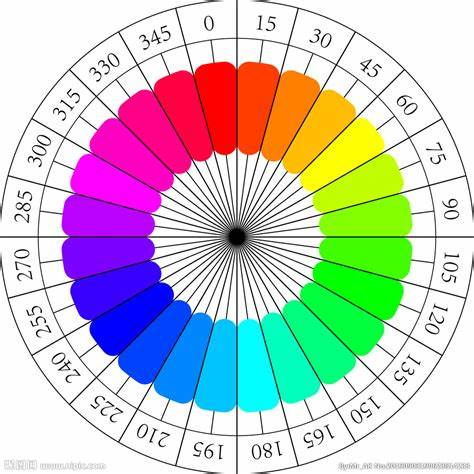
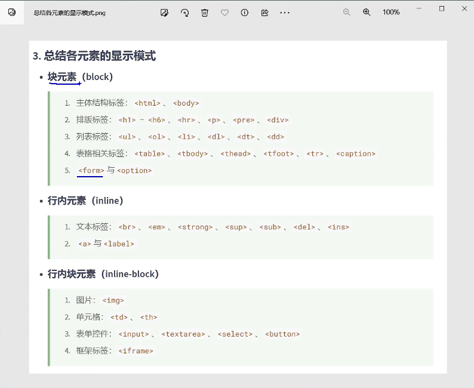

css三大特性
一，层叠性 解决样式冲突
二，继承性 自动拥有父元素或祖先元素的某些样式 常见可继承属性 text-, font-, line-, color ......
三，优先级 !important > 行内样式 > ID选择器 > 类选择器 > 元素选择器 > * >继承样式
颜色属性
颜色名 缺点-表达有限，单一
rgb(138,43,226); 0~255 红绿蓝 可以用 % 但必须要保持一致
rgba();a是控制透明度(0-1)0是透明,1是全看见。可用%
HEX 十六进制 #ff0000; #00ff00; #0000ff; 范围是 : 00 01 02 03 .. 09 0a 0b 0f 10 11 .. 1f 20 .. ff
HEXA 透明度用 0-f 表示
不挑大小写；相同的两位可以缩写一位，但透明度也只能写一位

hsl(180,100%,50%) HSL(色相,饱和度,亮度)
色相：色向环旋转角度，用 deg(度) 表示；
饱和度: 0%-100%；可以理解为往颜色里反向加入灰色。
亮度0%-100%: 变暗,到0%变成黑色,到100%成白色,一般50%
hsla(,,, .5);加入透明度
常见字体属性
font-size: ; 字体大小,默认16px,最小12px.不同字体大小不同。
font-family: "华文彩云"; 字体族，推荐英文。可以用 , 添加多个依次读取,同类型的字体(衬线/非衬线)
衬线字体: 比较有棱有角，笔锋明显，例如楷体，在末尾加,serif 表示继续寻找电脑中衬线字体
非衬线字体 统一粗细的线条，没有边角修饰。加 sans-serif
font-style: ; 字体风格 normal(无)/italic(自带斜体)/oblique(了解，不常见，强制斜体)
font-weight: ; 字体粗细 lighter > normal > bold > bolder(一般前三个，看字体设计有没有第四个挡位)
也可以用数值 100-1000 一般字体只有三个挡位
100-300:lighter 400-500:normal >=600:bold
字体复合属性 font: ; 要求: 后两位必须以此是字体大小和族，其他位置随意。
属性之间用空格隔开！！多个族之间加逗号。
color: ; 字体颜色。
文本间距 单位px,可以为负
letter-spacing 字母间距
word-spacing 单词间距，通过空格识别，不常见
文本修饰 无顺序要求
text-decoration: overline dotted green; 上划的绿色虚线
text-decoration: underline wavy red; 下划的红色波浪线
text-decoration: line-through; 删除线
text-decoration: none; 没有任何线,去除a标签的下划线
文本缩进 text-indent: px/em
文本对齐 text-align: ; left/center/right
行高 line-height: px/数值倍数1,2/百分比; 不要和字体大小相同.数字比较常用。可以继承父元素。默认以基线对齐
如果没有设置height, 可以撑开盒子, height为line-hright*行数
应用场景：调整多行文字间距
单行文字垂直居中 和盒子高度一致
单行文字靠底 盒子高度*2-字体大小-靠下的像素
垂直对齐方式 vertical-align: top/middle/bottom; 上中下。不写默认基线对齐，控制同一行元素之间，或单元格文字的垂直对齐方式，不能用来控制块元素。如果小于图片可以来控制自身位置
all: unset;去除元素所有样式。
列表属性
用在ul, ol, li 元素上
设置列表符号 list-style-type: none; 不显示 常用
设置列表符号位置 list-style-position: inside/outside; 在li的里面/外面
自定义列表符号 list-style-image: url("图片地址");
复合属性 list-style 无数量和顺序要求
表格相关属性
border: 1px blue solid; 边框样式--通用
背景相关属性
background-image: url(); 背景图片
当插入的背景撑不满会进行重复，可以用
background-repeat: no-repeat/repeat-x/y;
background-position: center top /left/right/10px 20px; 控制图片位置 推荐写俩词
background: ; 复合属性，不挑顺序
鼠标相关属性
cursor: url("地址"),pointer; 自定义，不超过30x30px
常用的长度单位
px
em(相当于当前元素或其父元素的font-size的倍数，往上找继承)
rem(root-根 在根目录去找html，寻找font-size的倍数)
% (相对其父元素百分比)
元素显示模式
块元素blcok (div)
独占一行，即使宽度很小
默认宽度充满整个父元素
高度由内容撑开
可以通过css设置宽高
行内元素inline (span)
不独占一行，多个元素可以放在一行
宽度高度都有内容撑开
无法通过css设置宽高
行内块元素 inline-block (img)
不独占一行，多个元素可以放在一行
宽度高度都有内容撑开
可以通过css设置宽高
元素定位后变为定位元素，宽高默认由内容撑开

修改元素显示样式
display: inline-block; 改为行内块元素
display: none; 不显示